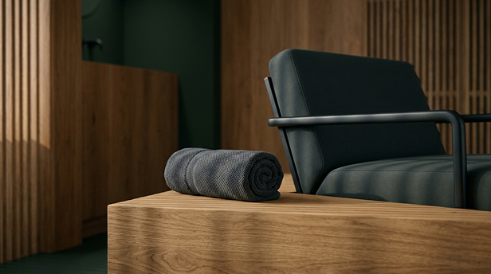

00–05 MINUTES
01 / The Downshift
Settle into your chair, put the outside world on pause and ease into the session with warmth, sound and guided breathing.

EVERY WEDNESDAY MORNING • 30-MINUTE SESSIONS IN SYDNEY CBD
A quieter mind. Clearer focus. A moment that's entirely yours, before the demands of the day. Experience 30 minutes of coach-led breathing, focus and sensory recovery in a dedicated acoustic sanctuary.
Book my complimentary sessionWed 9 Dec · 7:45–8:15 am · Sydney CBD · Small group
Come in your work clothes. No sweat, no experience needed.
SOUND FAMILIAR?
A dedicated space to step away from the noise, practise mental fitness and reset before your working day.
Nothing to organise. Nothing to prove. We'll guide you through the rest.
The experience
Not another app. Not another task on your to-do list. A structured in-person, boutique experience designed to help you practise switching between focus and recovery.
Settle into your chair, put the outside world on pause and ease into the session with warmth, sound and guided breathing.
Follow coach-led breathing and attention intervals, supported by rhythmic sound. Practise redirecting your focus and shifting into recovery.

Gentle guided recovery and a gradual return to the outside world, ready to transition into your working day.

DESIGNED AROUND YOUR LIFE
Work clothes, comfortable chairs, no changing or showering.
This isn't group therapy. You don't need to explain how you're feeling.
No need to know how to meditate or be good at switching off.
In and out in 30 minutes. A short walk from Wynyard and Circular Quay.
THE SCIENCE BEHIND THE FIRST 30
Just as physical fitness involves practising movement, strength and recovery, mental fitness involves practising how we direct our attention and respond to the demands around us.
The First 30 brings together three complementary, research-informed practices in one structured experience.
01 / REGULATION
Research into controlled breathing suggests that deliberate breathing patterns can influence autonomic nervous system activity and support relaxation and stress management.
02 / ATTENTION
Attention is not simply something we have or lack. Research into attention and mindfulness-based training explores how repeatedly noticing distraction and redirecting focus can support aspects of cognitive performance.
03 / RECOVERY
Research into music, sound and stress recovery informs our use of rhythmic audio and a carefully considered acoustic environment to support the experience of focus and relaxation.
Rather than asking you to simply switch off, we guide you through a structured practice of attention, regulation and recovery.
Our approach is informed by published research into individual techniques. The First 30's combined programme has not been independently clinically validated and is not a medical treatment.
THE TRAINING PROGRAMME · Q1 2027
Each month introduces a different training emphasis, building familiarity with the techniques of attention, regulation and recovery. Attending the complimentary preview session doesn't mean you have to proceed. But this is what's in store if you decide to join.
The interactive image is illustrative and does not indicate guaranteed results. The programme is research-informed, not independently clinically validated, and is not a medical treatment.
6–27 January
Practise deliberate breathing and shifting from activation into recovery.
3–24 February
Practise directing, sustaining and redirecting your attention.
3–24 March
Explore rhythmic sound, guided listening and intentional recovery.

The space itself
You cannot find deep mental clarity in a cluttered, noisy environment. Our morning sessions take place inside a state-of-the-art acoustic timber studio in the heart of Sydney’s CBD, specifically engineered to isolate ambient city noise, maximise natural light diffusion, and cultivate an immediate psychological sense of safety. The moment you walk through the door, your nervous system knows exactly what to do.

SECURE YOUR SPOT
Join us for a complimentary session on Wednesday 9 December. Try the full 30-minute experience and get priority booking access for the January launch.

YOUR INVITATION
Your 9 December session is complimentary, with no obligation to book again. Paid Wednesday sessions are planned from 6 January. We’ll share prices and booking options when January bookings open.
BEFORE YOU ARRIVE
No. This is structured mental conditioning, not group therapy. You come in, settle into your space, follow the audio and coach cues, and leave.
Whatever you wore to the office. Suits, dresses, trousers, sneakers—there is no sweating and no changing required.
That is exactly what the room is built for. Between the spatial soundscape, rhythmic pacing, and hot towel service, the protocol does the heavy lifting to quiet your mind so you don't have to fight your thoughts.
Attendees of the 9 December preview get first access to secure their preferred Wednesday morning time slot when our January program opens.
We meet at 180 George Street Community Space, Level 1 of the plaza building, 180 George Street, Sydney NSW 2000. Enter from the plaza and go up to Level 1. See the map and directions.
To protect the complete silence and acoustic integrity of the room for all participants, doors lock exactly at start time. We recommend arriving 10 minutes early to settle in. Or if your day allows, attend the next session.